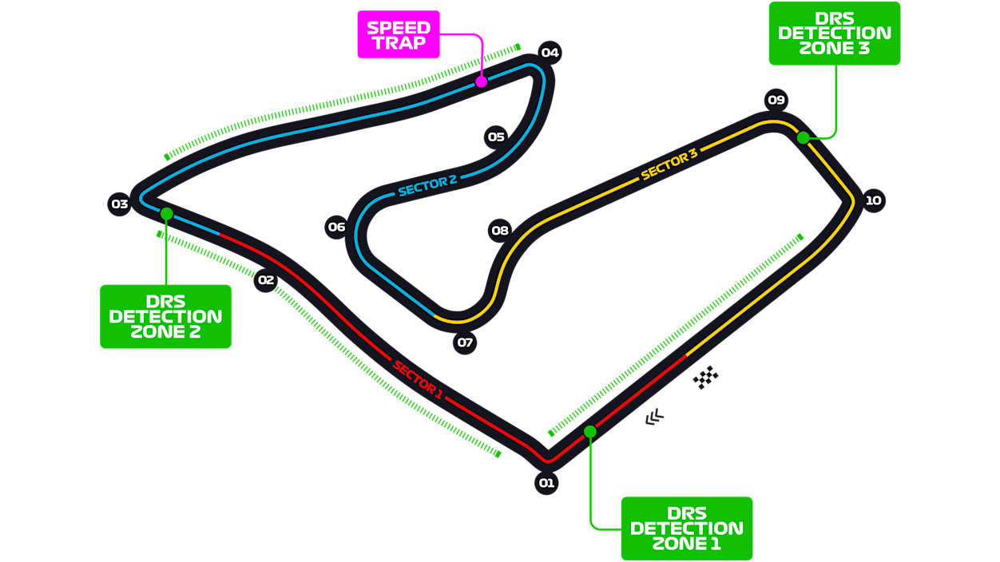

RED BULL RING

El Red Bull Ring, ubicado en Spielberg, Austria, es uno de los circuitos más cortos pero rápidos del calendario de Fórmula 1. Inaugurado originalmente en 1969 y renovado en 2011, el trazado es conocido por sus largas rectas, fuertes frenadas y hermosos paisajes montañosos.
DOMINIO
DE VERSTAPPEN
El Gran Premio de Estiria 2021 fue una carrera dominada por Max Verstappen, quien partió desde la pole position y mantuvo el control durante toda la competencia. El piloto de Red Bull mostró un ritmo muy superior al resto del pelotón.
Lewis Hamilton intentó mantenerse cerca durante la carrera, pero no pudo alcanzar al líder. Finalmente, Verstappen consiguió una victoria contundente en casa del equipo Red Bull. Hamilton terminó segundo y Valtteri Bottas completó el podio para Mercedes.

DATOS CURIOSOS
• El circuito está rodeado por las montañas de Estiria, ofreciendo uno de los paisajes más espectaculares de la Fórmula 1.
• Es uno de los circuitos más cortos del calendario actual.
• Debido a sus largas rectas y fuertes frenadas, es un circuito ideal para adelantamientos.